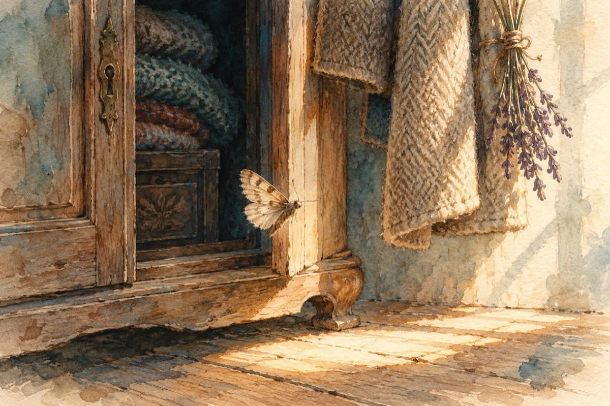

Molie
Ce cauți în hainele mele
Lucrezi sub acoperire?
Te-ascunzi în întunecime
Ce rău ți-au făcut blănurile?
Nu încerca să te ascunzi în lână,
Încearcă să te lași de obicei!
Ieși din dulapuri la lumină,
De vrei, de nu vrei!
Ți-am găsit ac de cojoc
Levânțică sau naftalină
Să știi că nu e un joc
Asta pentru că ești de vină!
Îți dau doar o șansă; ieși la lumină!
Vasile Groza